열람하려면 비밀번호를 입력하세요.
Enter password to view · パスワードを入力
⚠️
배포 금지 안내
본 자료는 (주)우성하이텍의 자산입니다.
무단 복제·배포·전송·게시를 금지하며, 허가 없이 외부로 공유할 수 없습니다.
승인된 사용자 열람용으로만 제공됩니다.
This manual is proprietary to Woosung Hitec (WSH). Unauthorized copying, distribution or posting is prohibited. 本資料の無断配布・複製を禁止します。
초안 — 확인필요 표시된 제원은 아직 확정되지 않았습니다. 인쇄·배포하지 마십시오.
TTC-1006
◤ 롤업마스터™ · WSH 우성하이텍
DC24V 전동개폐기 컨트롤러
TTC-1006 · 수출용
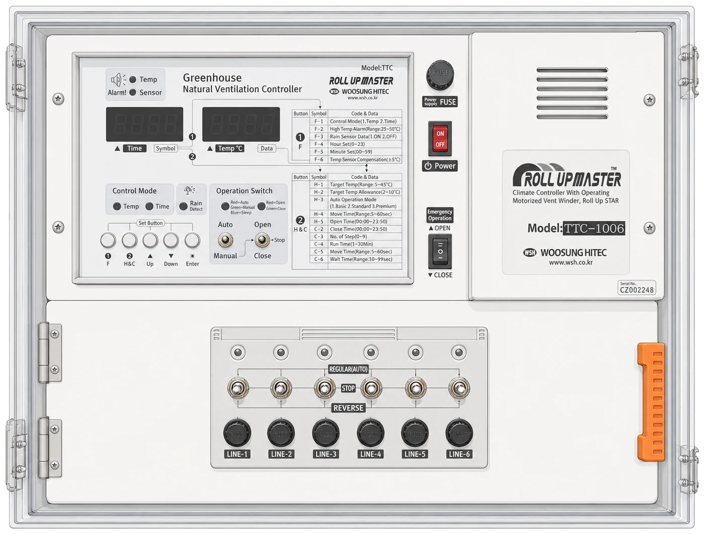
원하는 항목을 눌러 이동하세요. 페이지는 좌우로 밀거나(스와이프) 아래 이전/다음 버튼으로 넘길 수 있습니다.
Ⅰ. 안전을 위한 주의사항
아래 주의사항은 제품을 안전하고 정확하게 사용하여 예기치 못한 위험이나 손해를 사전에 방지하기 위한 것입니다.
⚠️
경고 지키지 않으면 사용자가 사망하거나 중상을 입을 수 있습니다.
⚠️
주의 지키지 않으면 부상·재산피해가 발생할 수 있습니다.
❗
필수 위험을 피하기 위해 주의 깊게 살펴보고 반드시 따라야 하는 사항.
🚫
금지 위험을 방지하기 위해 피해야 하는 사용방법.
1. 사용하기 전에
🌱
본 컨트롤러는 시설원예(그린하우스)의 자연환기창(천장·측면)을 개폐하는 전동개폐기용입니다. 규격에 맞는 전동개폐기를 연결하여 사용하고 다른 용도로 사용하지 마십시오.
⚡
다음의 경우에는 정상 작동되지 않습니다. ① 정전·누전 등으로 전기가 정상 공급되지 않거나 전원 퓨즈가 끊어졌을 때
② 기기 내·외부 장치가 오작동하거나 예상치 못한 요인으로 고장이 발생했을 때
③ 낙뢰·침수·화재 등에 의한 부품손상으로 고장이 발생했을 때
🌾
컨트롤러가 정상 작동되지 않으면 재배작물과 시설에 피해가 생길 수 있습니다. · 사용자는 컨트롤러의 이상이 있는지 판단할 수 있는 범위를 떠나지 마십시오.
· 이상이 발생하면 먼저 작물에 피해가 생기지 않게 조치하십시오.
· 퓨즈교환 등 간단한 조치로 복구되지 않으면 즉시 당사로 연락해 주십시오.
🙅
사용법을 충분히 숙지한 사용자 외에는 함부로 만지거나 조작하지 않도록 하여 주십시오.
🔋
정전 시에 사용할 수 있도록 발전기 또는 배터리(DC 24V)를 준비하여 주십시오.
🔌 비상용 전원 준비 (정전 대비)
본 컨트롤러는 작물이 재배되는 그린하우스의 자연환기용 전동개폐기를 작동시키는 장치로서, 정전 또는 고장이 생기면 연결된 전동개폐기가 작동되지 않으므로 작물에 피해가 발생할 수 있습니다.
● 정전이 되었을 때 — 발전기 + 인버터
발전기는 AC 230V 50Hz 출력용으로, 발전 용량은 총 사용하는 컨트롤러와 전동개폐기 수량(1대당 약 100W)을 고려하십시오.
인버터는 배터리(DC 12V)의 전기를 AC 230V로 변환하는 장치입니다.
[사용 예] 완전히 충전된 배터리(용량 80A/h) 전기를 인버터(1200W급)로 AC 230V로 변환하면, 100W급 전동개폐기 6대가 연결된 TTC-1006을 약 40분 동안 연속 작동시킬 수 있습니다. 연결된 전동개폐기 수량이 적을수록 사용시간은 길어집니다.
● 정전 또는 고장에 대비 — DC 24V 배터리
연결된 전동개폐기는 DC 24V용이므로 DC 24V 배터리를 전동개폐기에 직접 연결하여 응급 작동할 수 있습니다.
예고 없는 정전 또는 컨트롤러 고장에 대비하여 전선과 충분히 충전된 배터리를 반드시 준비하시기 바랍니다.
배터리로 전동개폐기를 직접 작동시키는 방법은 「문제해결」 페이지를 참조하십시오.
2. 설치 중에 — 🚫 이런 곳에 설치하지 마십시오
💧
물이 튀거나 내부로 물이 들어갈 수 있는 곳. 감전·화재·파손의 위험이 있습니다.
☀️
직사광선이 직접 닿는 장소. 제어부의 표시부가 고장날 수 있습니다.
🥵
고온·다습한 밀폐된 장소. 감전 및 과열의 위험이 있습니다.
〰️
진동이 생기는 곳. 고장이나 변형의 원인이 됩니다.
🐭
동물·곤충이 들어갈 수 있는 곳. 쥐·개구리·곤충 등이 들어가면 고장 또는 누전이 생길 수 있습니다.
🌍
반드시 접지단자가 있는 콘센트에 연결하여 주십시오. 감전·화재의 위험이 있습니다.
3. 사용 중에
⚠️ 다음 사항에 주의하십시오
🔧
함부로 분해·개조·수리하지 마십시오. 수리가 필요할 때는 당사로 연락하여 주십시오.
🖐️
손·발이 물에 많이 젖은 상태에서는 스위치를 조작하지 마십시오. 감전의 위험이 있습니다.
🌩️
천둥·번개가 치거나 낙뢰 손상이 우려될 때는 콘센트에서 플러그를 뽑아 전기를 완전히 차단하십시오. 화재·파손·고장의 위험이 있습니다.
🚿
내부에 물이 들어가지 않도록 하십시오. 내부에 전기가 흐르므로 감전·화재·파손의 위험이 있습니다.
🧯
퓨즈는 철사·구리선을 쓰지 말고 반드시 정격 퓨즈를 사용하십시오. 화재·파손의 위험이 있습니다.
🔍
정전 후 다시 전기가 들어오면 전원 퓨즈가 정상인지 반드시 확인하십시오. 퓨즈가 끊어지면 작동되지 않습니다.
4. 전원 관련 주의사항 ⚠️ 경고
하지 마십시오
위험
헐거운 콘센트에 전원 플러그를 꽂지 마십시오.
과열
전원 코드 부분을 잡아 당겨 빼지 마십시오.
단선
젖은 손으로 전원 플러그를 꽂거나 만지지 마십시오.
감전
한 개의 콘센트에 여러 개의 플러그를 꽂아 사용하지 마십시오.
화재
5. 장기간 보관 후 다시 사용할 때
작물을 재배하지 않는 기간에는 컨트롤러를 사용하지 않게 됩니다. 장기간 보관(방치) 후 다시 사용할 때는 다음 사항을 점검하여 이상이 있으면 올바르게 조치한 다음 사용하십시오.
전기 공급 상태(전압)와 전원코드의 연결 상태 등의 이상이 있는지 점검하십시오.
컨트롤러의 내부에 이물질이 들어가지 않았는가를 점검하십시오.
연결되어 있는 전동개폐기의 상태 및 전선의 이상이 있는지 점검하십시오.
그린하우스 구조물, 특히 개폐 막(비닐)과 개폐 축(파이프)의 이상이 있는지 점검하십시오.
Ⅱ. 제품 사양 · 모델
본 제품은 시설원예의 환기창(천장 또는 측면)을 개폐하는 DC24V 전동개폐기용 컨트롤러입니다. 모델은 5종류이며, 각 모델은 개별라인 스위치와 출력단자의 수량·위치·크기·무게·퓨즈 규격이 다르지만 기본 기능과 사용방법은 같습니다.
📋
제원이 아직 확정되지 않았습니다. 아래 빨간 확인필요 배지가 붙은 값은 제품 도면에서 확인한 실제 수치로 바꾼 뒤에 발행해야 합니다. 특히 퓨즈 용량은 추측해서 넣으면 안 됩니다.
기본 사양
모델
TTC-1006 (수출용)
사용 전원
AC 230V 50Hz 전용 ※ 수출지: 남아프리카공화국 (230V 50Hz)
출력 전기
DC 24V (변압기·정류기를 거쳐 변환)
전동개폐기 최대 사용가능 수
100W급 6대
출력라인 수
6개 (개별라인 스위치·퓨즈도 6개)
연결 가능 개폐기
DC 24V 모터 구동 · 소비전류 5A 이하 · 리미트 스위치 필수
전원 퓨즈
AC250V 5A · 유리관 6.35 × 31.8mm
개별라인 퓨즈
AC250V 6A · 유리관 6.35 × 31.8mm × 6개
퓨즈 절단 특성
정격의 135%에서 1시간 이내, 200%에서 2분 이내 절단 (UL 248-14)
제품 크기
가로 450 × 세로 350 × 깊이 160 (mm)
벽 부착 피치
가로 400 × 세로 364 (mm) ※ 세로 피치가 본체 높이(350)보다 큰 것은 부착 브래킷이 위아래로 돌출되어 있기 때문입니다.
본체 무게
약 21kg
내부 냉각
내부 온도 약 40℃ 이상이 되면 공기 배출구 안쪽 팬(Fan) 작동
설치 환경
옥내용. 직사광선·진동이 없고 통풍이 잘 되며 물이 스며들지 않는 곳
TTC-50 시리즈의 50W가 이 모델에서 100W로 바뀌었습니다. 라인당 허용 전류가 달라지므로 개별라인 퓨즈 용량과 개폐기 소비전류 상한은 TTC-50 값을 그대로 쓸 수 없습니다.
본체
TTC-1006 본체 — 6라인 출력 / DC24V 전동개폐기용 컨트롤러
각 부위의 명칭과 위치는 「Ⅲ. 각부의 명칭」에서 번호와 함께 확인하실 수 있습니다.
부속품
부속품이 빠지거나 잘못된 것이 있을 때에는 구입한 곳이나 당사로 연락하여 주십시오.
■ 표준제공 부속품
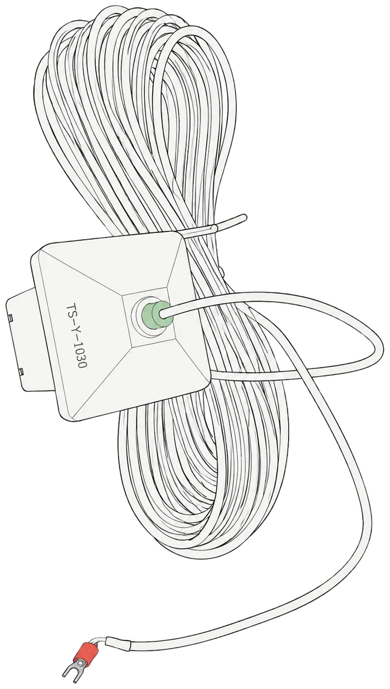
디지털 온도센서TSY-1030
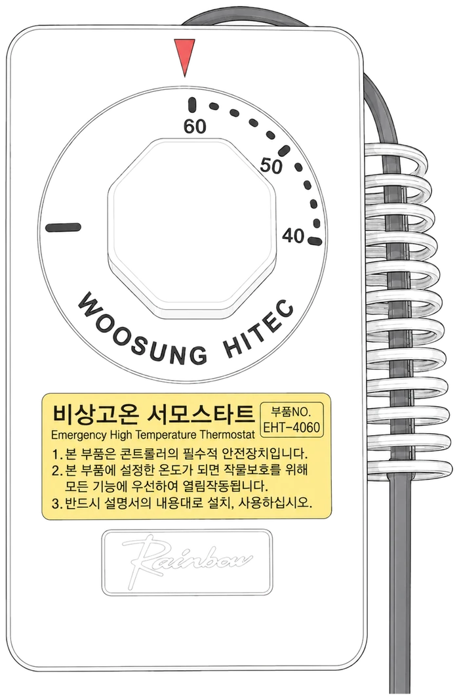
비상고온 서모스타트EHT-4060
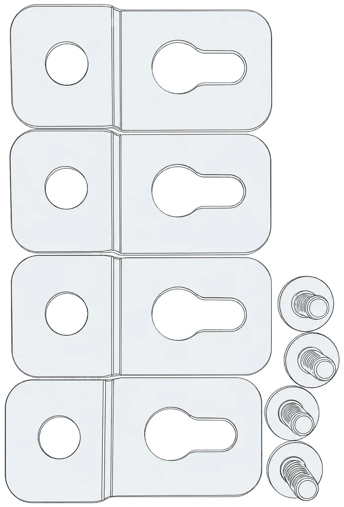
부착용 부품 1세트브래킷 4 + 볼트
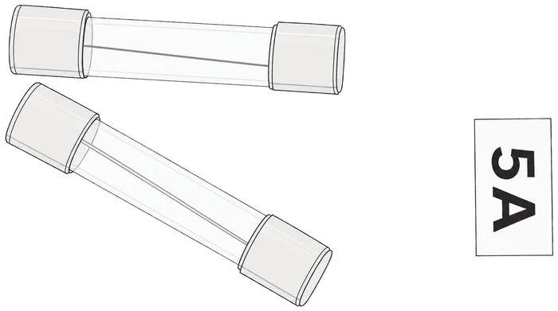
전원퓨즈 2개AC250V 5A
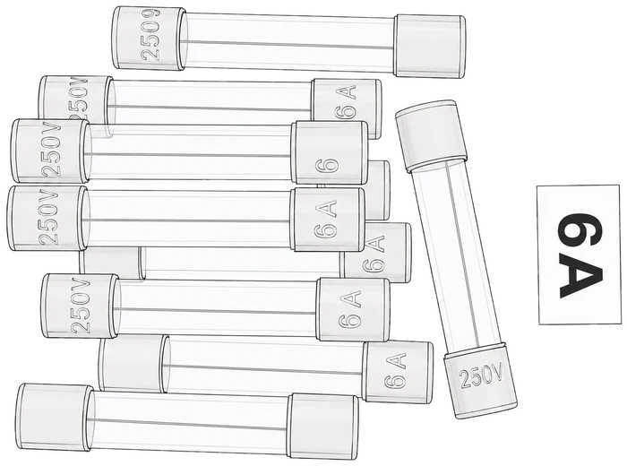
개별라인 퓨즈 10개AC250V 6A
□ 별도 판매 부속품
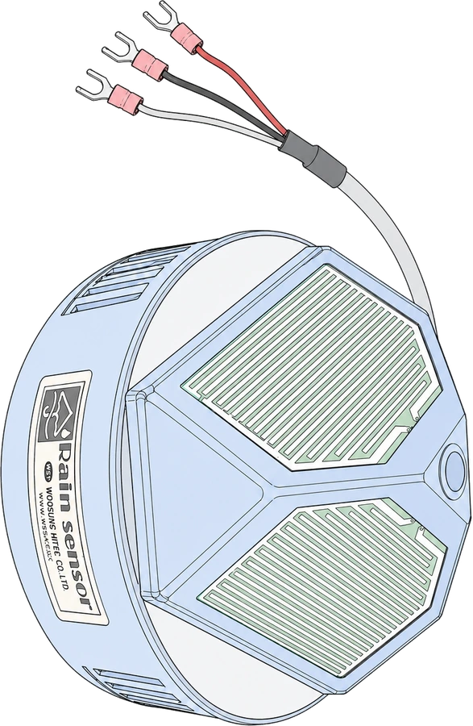
레인센서빗물 감지용 · 별매
※ 제품의 사양 및 규격은 품질개선을 위하여 사전 예고 없이 변경될 수 있습니다.
Ⅲ. 각부의 명칭
본체 각 부위의 명칭과 위치입니다. 정면은 번호로 표시하였으니 그림 아래 명칭과 대조하십시오.
1) 정면
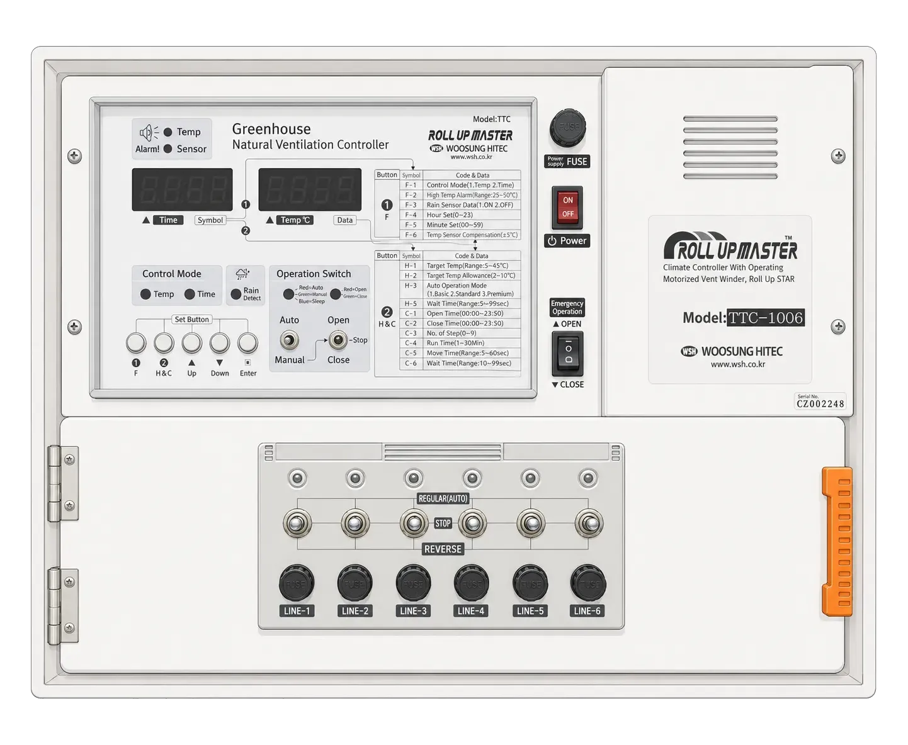
123456789
① 단자대 안전커버 닫음 (출고 상태)
겉에서 보이는 부위
제어부
전원 퓨즈
전원 스위치
응급운전 스위치
통풍구
모델 표시 라벨
개별라인 스위치
개별라인 퓨즈
단자대 안전커버
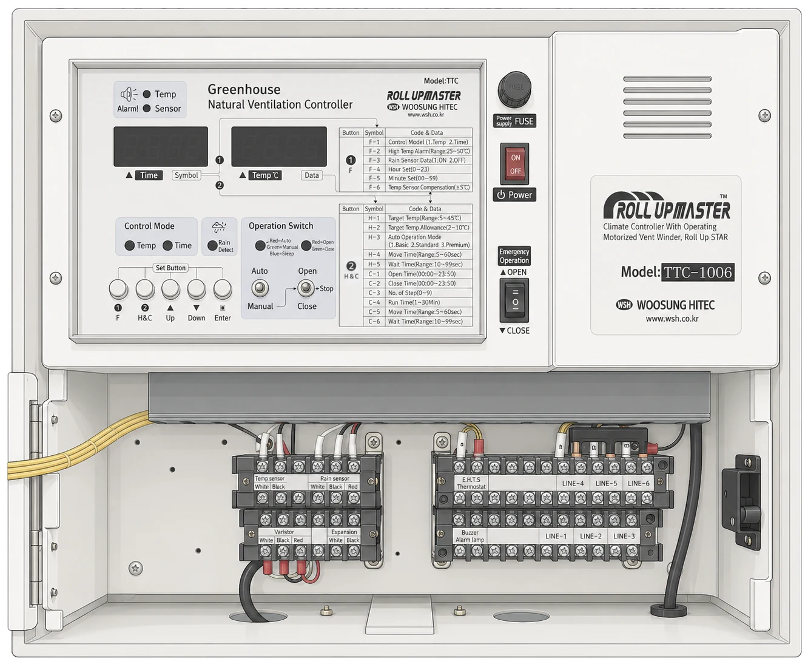
12
② 단자대 안전커버 열림
커버를 열어야 보이는 부위
센서 · TNR · 증설 단자대
서모스타트 · 알람 · 라인 1~6 출력 단자대
그 밖의 부위(제어부 · 전원 · 응급운전 스위치)는 커버를 닫아도 그대로 보이므로 ①의 번호를 따릅니다.
2) 뒷면 · 3) 밑면 · 4) 왼쪽 면 · 5) 오른쪽 면
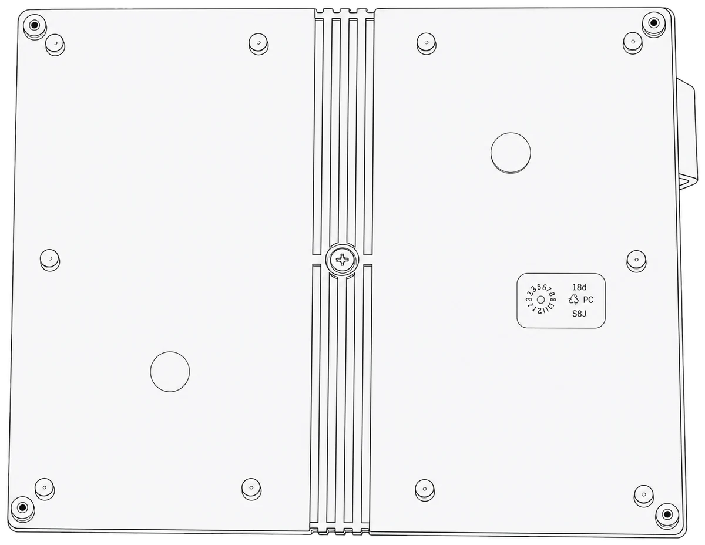
뒷면 — 벽면에 부착하여 사용할 때에는 공급된 부착용 부품을 사용하십시오.
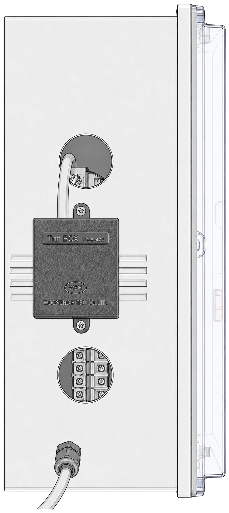
밑면 — 단자 인입구 / TNR 박스 / 전원선
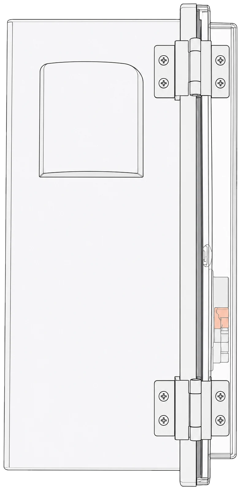
왼쪽 면 — 공기 흡입구 (안쪽 팬 박스) / 경첩
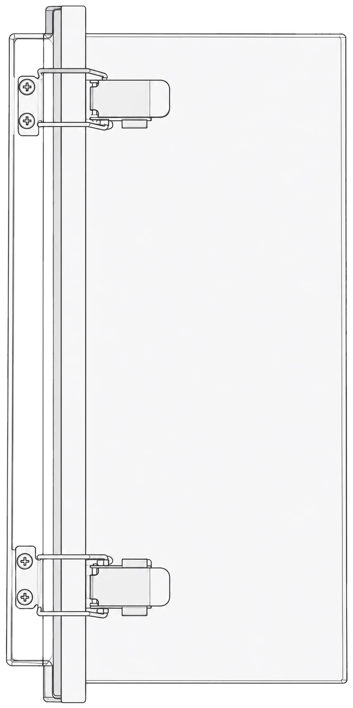
오른쪽 면 — 커버 고정장치 (위 · 아래 2곳)
왼쪽 면 — 공기 흡입구
왼쪽 면의 넓은 사각 부분이 공기 흡입구입니다. 이곳으로 바깥 공기가 들어와 기기 안쪽을 식혀 줍니다.
기기 안쪽 온도가 약 40℃를 넘으면 팬(Fan)이 저절로 돌아갑니다.
🌬️
흡입구를 물건으로 막지 마십시오. 공기가 막히면 기기 안쪽 온도가 올라갑니다.
오른쪽 면 — 커버 여닫기
오른쪽 면 위·아래 두 곳의 매미고리로 커버를 잠급니다. 진동에 열리지 않도록 안전걸쇠(이중잠금)가 함께 걸립니다.
열 때 — 안전걸쇠를 누른 채로 손잡이를 바깥으로 젖혀 고리를 걸림턱에서 벗깁니다.
닫을 때 — 고리를 걸림턱에 걸고 손잡이를 끝까지 눌러 닫으면 안전걸쇠가 딸깍 걸립니다.
Ⅳ. 설치와 전원 연결
1) 설치장소
본 컨트롤러는 옥내용입니다. 직사광선과 진동이 없고, 통풍이 잘 되고 물이 스며들지 않으며 과습하지 않은 장소에 설치하십시오.
⚠️
본 컨트롤러를 그린하우스의 벽면 파이프에 부착하여 설치하지 마십시오. 바람 등의 진동에 의해 내부의 부품이나 전선을 조여 놓은 볼트 등이 풀리거나 물·습기가 들어가서 고장이 발생할 수 있습니다.
2) 누전차단기
누전(Power leakage)이란 배선의 피복이 벗겨지거나 전기 제품 몸체 등 전기배선과 관계없는 부분에서 전기가 흐르는 현상입니다. 누전차단기는 미세한 전류라도 누전되면 짧은 시간(0.03초 내)에 전기 선로를 자동 차단하는 고감도 기능을 갖춘 안전장치로, 220V를 사용할 때는 반드시 설치해야 하고 월 1회 이상 시험버튼을 눌러 정상작동 여부를 확인하십시오. 〈자료출처: 전기안전공사 홈페이지〉
위 누전차단기 설명과 점검 방법은 대한민국의 전원 및 전기설비 환경을 기준으로 작성되었습니다.
해외에서 본 제품을 설치하는 경우에는 설치 국가 또는 지역의 전기설비 관련 법규와 기술기준에 적합한 누전 보호장치를 사용하십시오. 누전 보호장치의 종류, 정격감도전류, 차단시간, 접지 방식 및 설치 방법은 현지 규정에 따라 선정해야 하며, 설치 및 점검은 자격을 갖춘 전기기술자가 수행해야 합니다.
시험 버튼을 이용한 점검 방법과 점검 주기는 해당 누전 보호장치 제조업체의 지침 및 현지 규정을 따르십시오. 점검 중에는 연결된 장비의 전원이 차단될 수 있으므로, 장비를 안전하게 정지한 후 점검하십시오.
3) TNR박스(과전압 차단장치) 설치
과전압 차단장치(TNR 박스)는 전원 코드를 통하여 과전압이 유입되었을 때 컨트롤러 내부의 부품을 보호하기 위한 안전장치입니다. 정격전압 AC230V가 공급되어 사용할 때는 정상적으로 작동되지만, 낙뢰 등에 의해서 발생된 AC400V 이상의 전압이 유입되면 이 장치 내부의 TNR 소자가 과전압에 의해 순간적으로 파괴된 후 합선 상태가 됩니다. 합선이 되면 누전차단기 또는 전원차단기(브레이커)가 내려가 전원을 차단하게 됩니다.
🌩️
매우 강력한 낙뢰(수천~수십만 볼트)에 의해 고전압이 유입되었을 때는 TNR로 내부부품이 보호되지 않습니다. 차단기가 차단되기 전에 먼저 부품에 손상을 주기 때문입니다. 낙뢰에 의하여 컨트롤러 손상이 우려될 때에는 콘센트에서 전원 플러그를 뽑아 주십시오.
※ TNR 소자는 한 번 파손되면 재사용할 수 없으며, TNR 박스를 통째로 교체해야 합니다.
■ TNR 박스 연결
⚠️
연결하기 전에 반드시 콘센트에서 전원 플러그를 뽑아 주십시오. 전원스위치를 내려도 내부 일부 부품에는 전기가 흐르고 있어 만지면 감전됩니다. 작업을 마친 뒤에는 단자대 안전커버를 다시 부착하십시오.
TNR 박스를 본체 밑면에 부착합니다. (그림 ①)
TNR 코드를 단자대의 Varistor(배리스터) 단자에 전선 색(흰 · 검 · 적)에 맞춰 연결합니다. (그림 ②)
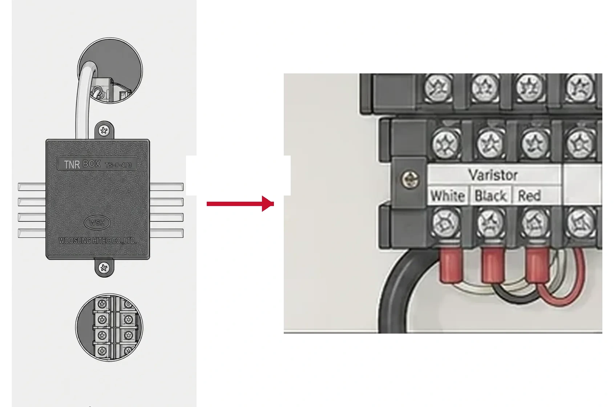
12
TNR 박스 연결 — ① 밑면 부착 / ② 단자대 Varistor 결선
TNR 박스 연결 각부 명칭
TNR 박스
Varistor 단자
Ⅴ. 퓨즈(FUSE) 관리
퓨즈는 과전압·과부하가 발생하였을 때 녹아서 끊어져 내부 전기회로와 부품을 보호합니다. 본 컨트롤러에는 전원 퓨즈(5A)와 개별라인 퓨즈(6A) 두 종류가 있습니다.
1. 전원 퓨즈
전원 퓨즈는 제어부 오른쪽 맨 위에 있으며, 컨트롤러 내부의 전기회로를 보호합니다.
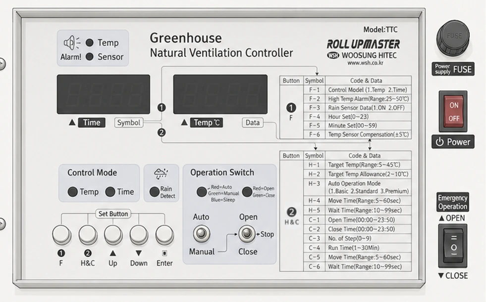
123
제어부 오른쪽 각부 명칭
전원 퓨즈
전원 스위치
응급운전 스위치
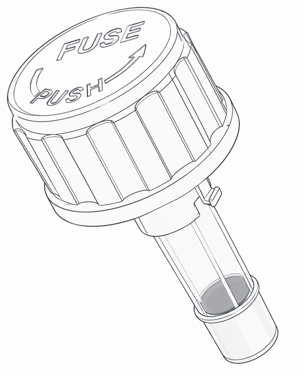
퓨즈홀더 — 손잡이 / 홀더 캡 / 유리관 퓨즈전원 퓨즈 — AC250V 5A / 양쪽 끝 금속 캡에 용량 표시
규격
AC250V 5A
형태
유리관 퓨즈 6.35 × 31.8mm
🌾
전원 퓨즈가 끊어지면 컨트롤러 전체가 작동하지 않습니다.
연결된 전동개폐기도 멈춰 그린하우스 작물에 심각한 피해가 생길 수 있으니, 사용자가 항상 상태를 확인할 수 있어야 합니다. ※ 본 컨트롤러는 무인 운전장치가 아닙니다.
2. 개별라인 퓨즈
개별라인 퓨즈는 각 개별라인 스위치 바로 아래에 있습니다. DC24V 출력전기는 개별라인 스위치와 이 퓨즈를 거쳐 단자로 나가며, 선로가 합선되거나 전동개폐기에 과부하가 걸릴 때 과전류로부터 컨트롤러와 전동개폐기를 보호합니다.
용량이 높은 퓨즈 또는 철사·구리선을 퓨즈 대용으로 사용하면 과전류가 흘러도 전기가 차단되지 않아 컨트롤러 및 전동개폐기의 고장 또는 화재가 발생할 수 있으니 절대 사용하지 마십시오.
🎚️
개별라인 스위치를 급격하게 조작하면 과전류가 흘러 개별라인 퓨즈가 끊어질 수 있습니다. 천천히 조작하십시오.
3. 퓨즈 교환 방법
전원 퓨즈와 개별라인 퓨즈의 교환 방법은 같습니다. 전원 / 개별라인의 차이만 각 단계에 표시하였습니다.
⚡
교환하기 전에 반드시 전원(또는 해당 라인 출력)을 차단하십시오. 감전의 위험이 있습니다. 교환을 마친 뒤에 전원을 켜십시오.
출력을 멈춥니다. 전원 퓨즈는 전원 스위치를 OFF, 개별라인 퓨즈는 해당 라인 스위치를 중립(정지)에 둡니다.
퓨즈홀더 손잡이를 반시계방향으로 돌려 홀더를 빼냅니다. (개별라인은 손잡이를 살짝 누르면서 돌립니다.) 홀더 안에 유리관 퓨즈가 들어 있습니다.
퓨즈가 끊어진 원인을 찾아 제거합니다.
표시된 용량에 맞는 새 퓨즈로 교환합니다. (전원 5A / 개별라인 6A)
교환 후에도 계속 끊어지면 — 전원 퓨즈는 당사로 연락, 개별라인 퓨즈는 선로(합선·과부하)를 점검하십시오.
4. 퓨즈 절단 특성
퓨즈는 정해진 전류를 넘으면 즉시 끊어지는 것이 아니라, 초과한 정도에 따라 끊어지는 시간이 달라집니다. 아래는 UL STD. 248-14 기준값입니다(25℃).
통전 전류
전원 퓨즈 5A
개별라인 퓨즈 6A
끊어지는 시간
100% 정격
5.0A
6.0A
4시간 이상 견딤 — 정격 전류로는 끊어지지 않습니다
135%
6.75A
8.1A
1시간 이내에 끊어짐
200%
10.0A
12.0A
2분 이내에 끊어짐
즉 개별라인 퓨즈(6A)는 6A까지는 정상 통전되고, 8.1A면 1시간 안에, 12A면 2분 안에 끊어집니다. 합선처럼 전류가 훨씬 크면 그보다 훨씬 빨리 끊어집니다.
⏱️
퓨즈가 바로 끊어지지 않는다고 해서 정상은 아닙니다. 정격을 조금 넘는 상태로 오래 쓰면 전동개폐기와 배선에 무리가 갑니다. 퓨즈가 끊어졌다면 반드시 원인을 찾아 제거한 뒤 교환하십시오.
※ 개별라인 퓨즈에 의해 환기창의 피복재(필름, 비닐 막) 또는 구조물 등이 보호되는 것은 아닙니다.
Ⅵ. 전동개폐기 연결
1. 사용 가능한 전동개폐기 사양
전압
직류(DC) 24볼트 모터에 의해 구동되는 전동개폐기
전류
소비전류 5A 이하 ※ 개별라인 퓨즈가 6A이므로, 5A를 넘는 개폐기를 연결하면 정상 운전 중에도 퓨즈가 끊어질 수 있습니다.
리미트 스위치
주행거리 제한장치(리미트 스위치)가 있는 전동개폐기
🚫
위 사양과 맞지 않는 전동개폐기는 본 컨트롤러에 연결하여 사용하지 마십시오. 소비전류가 2A 이상인 전동개폐기를 연결하거나 1대 단자에 1대 이상을 연결하면 컨트롤러 내부의 전기회로에 고장이 발생할 수 있습니다.
2. 출력전기의 극성과 회전방향
컨트롤러에 입력된 교류(AC 230V 50Hz)는 내부의 변압기와 정류기를 통과하면서 직류(DC) 24V로 변환되어 단자에 출력됩니다. 출력되는 직류전기는 운전조건에 따라 극성이 바뀌며, 이 극성에 의해 연결된 전동개폐기의 구동축 회전 방향이 결정됩니다. 즉, 극성에 따라 구동축이 정방향·역방향으로 회전하는 특성을 이용하여, 환기창의 피복재(플라스틱 필름·비닐 막)를 개폐 축에 감거나 풀면서 창을 열고 닫습니다.
위 그림은 당사 전동개폐기(모델명 WSM-4035)의 극성 변환에 따른 회전방향입니다. 전동개폐기의 기종이나 제작사에 따라 구동축의 회전 방향이 다를 수 있습니다. 설치하기 전에 미리 극성에 따른 회전방향을 알아보고 그것에 맞게 설치하시기 바랍니다.
● 주요 전기부품
컨트롤러 내부와 연결에 관계된 주요 전기부품의 이름과 기능입니다.
부품 이름
기능
변압기 (Transformer)
전자기 유도작용을 이용하여 전압을 바꾸는 장치
정류기 (Rectifier)
교류전기를 직류전기로 변환시키는 것
토글 스위치 (Toggle Switch)
손잡이를 상·하로 움직여서 작동하는 스위치
단자 (Terminal)
전기기기에서 전극을 접속시키는 곳에 붙이는 쇠붙이
※ 퓨즈 · 전원(누전) 차단기 · TNR 박스는 각각 「Ⅳ. 설치와 전원 연결」 · 「Ⅴ. 퓨즈(FUSE) 관리」에서 자세히 설명합니다.
3. 좌·우측용 구분
그린하우스 환기창의 구조는 좌·우가 대칭으로 되어 있습니다. 좌측 창은 개폐 축이 시계방향으로 회전되면서 열리는 구조이고, 우측 창은 그 반대인 반시계방향으로 회전되며 열리는 구조입니다. 따라서 좌·우측 전동개폐기의 구동축 회전방향이 서로 반대가 되어야 합니다.
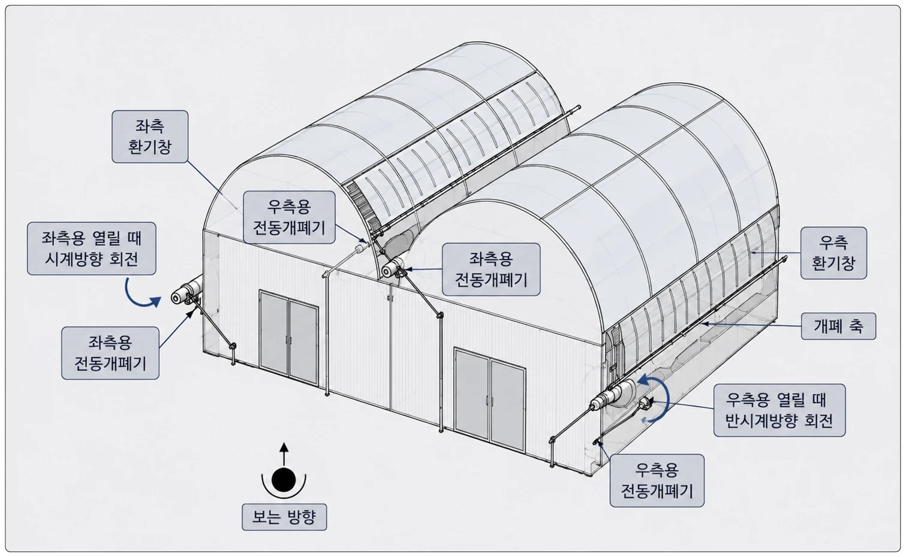
12345678910
좌측용·우측용 구분 — 그린하우스를 정면(보는 방향)에서 볼 때 기준 〈그림 3-1〉
좌측용·우측용 구분 각부 명칭
좌측 환기창
좌측용 열릴 때 시계방향 회전
좌측용 전동개폐기
우측용 전동개폐기
좌측용 전동개폐기
우측용 전동개폐기
우측용 열릴 때 반시계방향 회전
개폐 축
우측 환기창
보는 방향
구분
설치 위치 (정면에서 볼 때)
열림 작동
닫힘 작동
좌측용
왼쪽 환기창
구동축 시계방향 회전
반시계방향 회전
우측용
오른쪽 환기창
구동축 반시계방향 회전
시계방향 회전
4. 출력단자 극성 구분
각 개별라인(LINE)의 단자는 2개이며 왼쪽단자와 오른쪽단자로 구분합니다. 개별라인 스위치를 "정지"(가운데)에 맞춘 해당 라인의 단자에는 출력되지 않습니다. 모든 모델의 출력단자는 같은 방식으로 구분하며 출력극성도 같습니다.
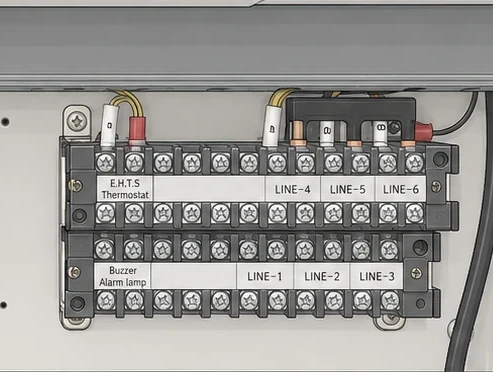
1234
출력단자 각부 명칭
E.H.T.S 서모스타트
부저·경보램프
LINE-4·5·6 출력단자
LINE-1·2·3 출력단자
전동개폐기 연결 방법
⚡
단자에 전선을 연결하거나 변경할 때는 전원 콘센트에서 플러그를 뽑아 전원을 완전히 끈(OFF) 후에 작업하십시오. 감전의 위험이 있습니다.
구분
왼쪽단자
오른쪽단자
열림 작동 시
닫힘 작동 시
좌측용
청색 선
갈색 선
시계방향 회전
반시계방향 회전
우측용
갈색 선
청색 선
반시계방향 회전
시계방향 회전
먼저 개폐기가 좌측용인지 우측용인지 확인합니다. (「3. 좌·우측용 구분」 참조)
위 표에 따라 전선을 연결합니다 — 좌측용은 청색을 왼쪽 단자에, 우측용은 갈색을 왼쪽 단자에 연결합니다.
각 단자에는 전동개폐기를 1대씩만 연결합니다. 1대 이상 연결하면 고장의 원인이 됩니다.
연결한 뒤 열림 작동을 시켜 회전방향을 확인하고, 방향이 반대이면 두 선을 서로 바꿔 연결합니다.
전동개폐기의 전원코드를 연장할 때에는 전선의 색을 같은 색끼리(2가닥) 결선하면 혼동을 피할 수 있습니다. [예] 청색과 청색을 연결하고 갈색과 갈색을 연결하십시오.
5. 출력단자 극성표
1) 수동 운전할 때
수동운전 스위치
개별라인 스위치
출력단자의 극성
왼쪽단자
오른쪽단자
상 열림
상향 "수동정상운전"
＋
－
중립 "정지"
×
－
하향 "수동역출력운전"
－
＋
중 정지
상·중·하 모두
×
－
하 닫힘
상향 "수동정상운전"
－
＋
중립 "정지"
×
＋
하향 "수동역출력운전"
＋
－
2) 자동 운전할 때
작동 조건
왼쪽단자
오른쪽단자
서모스타트·고온경보에 의한 특별작동 또는 열림 개시온도가 되었을 때
＋
－
빗물감지에 의한 특별작동 또는 닫힘 개시온도가 되었을 때
－
＋
개별 스위치를 중립에 맞추거나 대기시간 또는 잠자기가 실행될 때
×
－
Ⅶ. 센서 및 주변기기
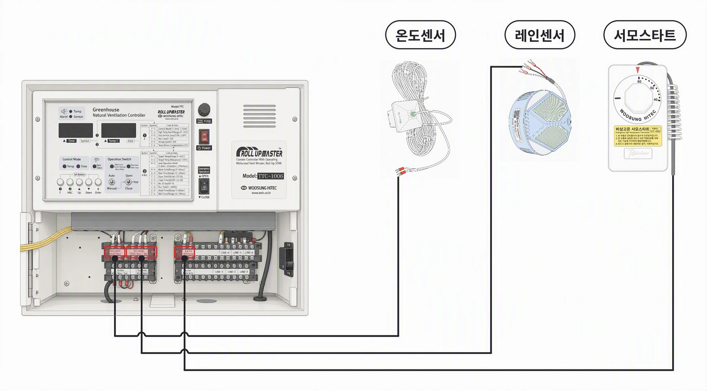
센서 결선도 — 온도센서·레인센서·서모스타트를 각 단자에 연결한 모습
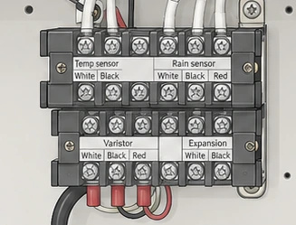
1234
센서 단자대 — 단자대 안전커버를 열면 보이는 센서 연결부(①~④)
센서 단자대 각부 명칭
온도센서 연결
레인센서 연결
TNR 연결
증설 연결
1. 서모스타트 (Thermostat)
그린하우스 실내의 온도가 지나치게 높은 상태가 되었을 때 작물보호를 위하여 열림 작동이 되게 하는 중요한 안전장치입니다. 실내 온도가 서모스타트에 설정된 온도보다 높아지면 모든 자동제어 기능에 우선하여 열림 작동이 됩니다.
본 기능은 자동·수동 운전할 때 항시 실행됩니다.
단, 개별라인 스위치를 "정지"(꺼짐)에 맞춘 해당 출력단자에 연결된 전동개폐기는 본 기능이 실행되어도 작동되지 않습니다.
본 기능이 실행되면 컨트롤러 내부의 부저가 작동됩니다.
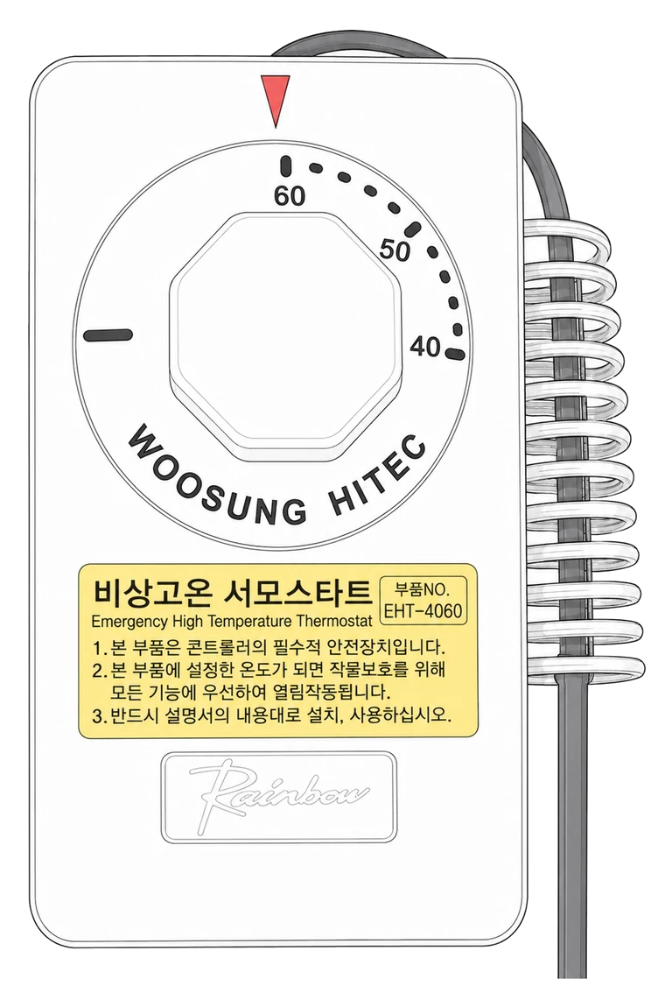
12
서모스타트(EHT-4060) — 온도 눈금 / 설정 손잡이 / 기준점 / 감지부 / 코드
서모스타트(EHT-4060) 각부 명칭
온도 설정
온도 감지부
설치와 연결
그린하우스 실내의 평균기온을 측정하기 좋은 장소에 설치하십시오.
서모스타트의 내부에 액체(물, 농약)가 들어가지 않게 설치하여 주십시오.
서모스타트의 코드에 전선을 연장하여 컨트롤러 단자대의 "서모스타트"로 표시된 단자에 연결하십시오. ※ 연결할 때 전선의 색깔을 구분할 필요는 없습니다.
온도 설정
날씨가 갑자기 바뀌거나 제어부(전자회로)의 고장 등 예상하지 못한 상황이 발생해서 정상운전이 되지 않을 때를 대비하여, 재배작물에 고온피해가 생길 수 있는 온도보다 약간 낮은 온도로 맞추어 주십시오.
실내온도가 설정한 온도보다 높아지면 연속 열림 작동이 됩니다.
온도설정 손잡이를 돌려 온도설정 기준점에 희망 온도를 맞추십시오. (설정범위: 최소 40℃ ~ 최대 60℃)
서모스타트에 맞추는 온도는 제어부에서 설정하는 고온경보 온도보다 높게 맞추어야 합니다. 고온경보보다 낮게 맞추면 자동·수동 운전할 때 장애가 발생할 수 있습니다.
실내온도가 서모스타트 설정온도 이하가 될 때까지 자동운전이나 수동운전이 정상적으로 되지 않습니다.
💧
서모스타트의 내부에 액체(물 또는 농약)가 들어가지 않게 하십시오. 물이 들어가면 오작동·고장이 발생합니다.
🔎 서모스타트는 어떤 원리로 작동하나요?
서모스타트는 온도에 의해 작동되는 스위치입니다. 설정한 온도가 되면 옆면에 있는 스프링 모양의 온도 감지부 안에 든 가스가 팽창하는 원리로 내부 스위치가 작동됩니다. 전자회로가 아니므로 제어부가 고장 나더라도 독립적으로 작동하여 작물을 보호합니다.
2. 온도센서
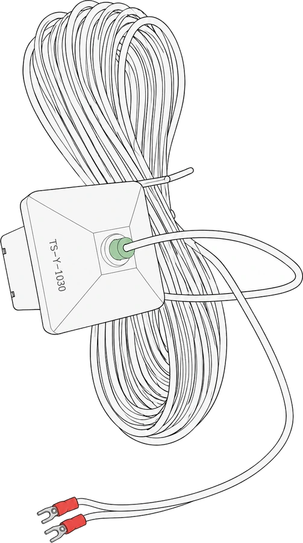
온도센서(TS-Y-1030) — 감지부 / 센서 코드 (약 30m)
온도센서는 그린하우스 실내 기온을 감지하여 그 정보를 컨트롤러의 제어부로 보냅니다. 본 설명서에 표기된 "그린하우스의 실내온도"의 의미는 본 센서가 감지한 온도입니다.
온도 감지부를 재배하는 작물의 생육 특성과 그린하우스의 특성을 고려하여 알맞은 곳에 설치하십시오.
온도센서 선과 온도감지부가 태양광선에 직접 노출되지 않고 공기가 잘 통하지 않는 곳을 피해서 설치하여 주십시오.
컨트롤러 단자대의 "온도센서"로 표시된 단자에 연결하십시오. ※ 전선의 색깔을 구분할 필요는 없습니다. 코드 길이 약 30m
☀️
온도센서 선이 태양광선에 노출되면 그 정도에 따라 수명이 단축됩니다. 태양광선이 직접 닿지 않는 곳으로 센서 선을 돌려서 설치하십시오.
🌡️
센서 선이 끊어지거나 연결이 불량하면 온도를 감지할 수 없습니다. 이때 제어부 화면의 현재온도 자리에 "－－－"가 표시되며 센서이상 표시가 점멸되고 1초 간격으로 경보 음이 발생합니다. 온도센서에 이상이 생기면 자동운전이 되지 않습니다. ※ 본 컨트롤러에 규격이 다른 센서를 연결하면 온도측정이 되지 않습니다.
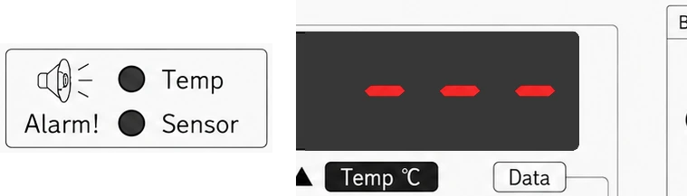
온도센서 이상 시 — 현재온도 자리에 「- - -」 표시, 센서이상(Sensor) 점등🌡️ 온도에 관한 상식
온도란 물체의 차고 더운 정도를 수량적으로 표시한 것으로, 지상 기온이라 함은 단순 적으로 인간의 주요 감각기관인 얼굴의 지상높이를 기준으로, 지면상(적설이 있을 때에는 설면상) 1.2~1.5m 높이의 공기온도를 뜻합니다. 지면 가까이의 기온은 낮과 밤 또는 단시간 사이에도 매우 변화가 크게 나타나지만, 지상 1.5m 정도의 높이에서는 그 변화가 매우 적어지는 현상이 있으므로 일정하게 변하는 온도 값을 구할 수 있습니다. 〈자료출처: 기상청 홈페이지〉
3. 레인센서 (모델: WRS-485 · 별매품)
레인센서는 빗물을 감지하는 기능을 가지고 있습니다. 빗물 감지 판의 감지선(빗살모양) 사이에 물기(습기)가 채워지면 비내림으로 판단합니다.
※ 레인센서(모델 WRS-485)의 자세한 구조와 사용법은 레인센서에 동봉된 별도 설명서를 참조하십시오.
빗물감지 정보가 제어부에 전달되면 빗물감지 표시에 적색램프가 켜지며 연속 닫힘 작동이 됩니다.
본 빗물감지 기능은 자동운전에만 적용되며 수동운전을 할 때는 적용되지 않습니다.
빗물감지선 사이에 빗물이 채워지지 않을 정도의 매우 적은 양의 비는 감지되지 않을 수 있습니다.
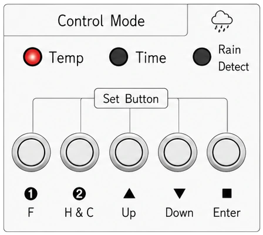
빗물 감지 시 — 제어부 「Rain Detect」 표시등 적색 점등
🥇
빗물감지 정보가 전달되더라도 다음의 경우에는 작물보호를 위해 열림 작동되도록 우선순위가 정해져 있습니다. ① 실내 온도가 서모스타트에 설정한 온도보다 높을 때 ② 실내 온도가 디지털 비상고온보다 높을 때
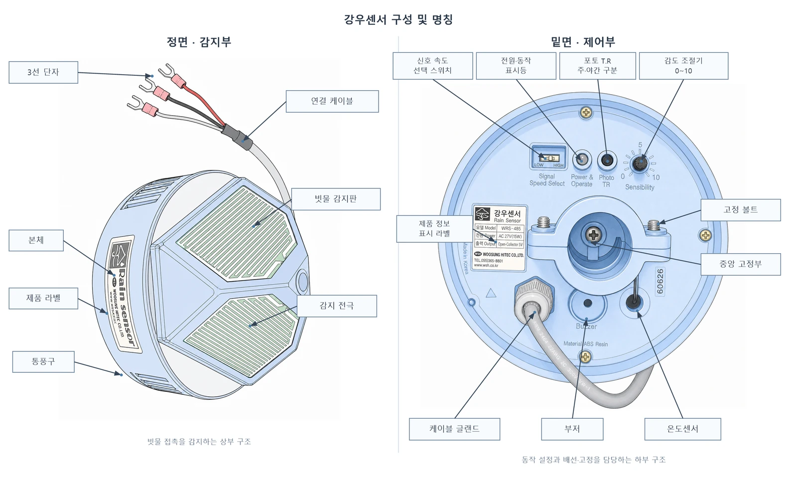
레인센서 구성 및 명칭 — 왼쪽 정면(감지부) / 오른쪽 밑면(제어부). 설치할 때 맞추는 신호 속도 선택 스위치와 감도 조절기는 밑면에 있습니다.
부위
역할
빗물 감지판 · 감지 전극
감지선(빗살모양) 사이에 물기가 채워지면 비내림으로 판단합니다. 감지선이 채워지지 않을 정도의 적은 비는 감지되지 않을 수 있습니다.
신호 속도 선택 스위치
설치하기 전에 LOW(왼쪽)에 맞춥니다.
감도 조절기 (0~10)
빗물 감지 감도를 조절합니다. 설정값은 레인센서 별도 설명서를 따르십시오.
포토 T.R
주간과 야간을 구분합니다.
전원·동작 표시등 / 부저
동작 상태를 알립니다. 감지판에 물을 묻히면 약 1초 간격으로 경보음(삑-)이 발생하므로, 설치 후 이것으로 정상 연결을 확인합니다.
3선 단자 · 연결 케이블
전선 색깔을 구분하여 컨트롤러 단자대의 「레인센서」 단자에 연결합니다.
고정 볼트 · 중앙 고정부
설치 지점에 본체를 고정합니다.
제품 정보 표시 라벨
모델 WRS-485 · 전원 AC 27V(15W) · 출력 Open-Collector 5V
※ 위 표는 도해에 표시된 부위의 역할입니다. 감도 설정값 등 레인센서 자체의 상세 사용법은 동봉된 별도 설명서를 참조하십시오.
빗물을 감지하기 좋은 지점에 설치해야 합니다.
낙수(물)가 떨어지는 곳을 피해서 설치하십시오.
설치하기 전에 레인센서 밑면의 속도선택 스위치를 LOW(왼쪽)에 맞춰주십시오.
레인센서 전선의 색깔을 구분하여 "레인센서"로 표시된 단자에 연결하십시오.
설치 확인 — 빗물 감지판에 물을 묻히면 약 1초 간격으로 경보 음(삑-)이 발생되면서 빗물감지 표시가 적색 점멸됩니다.
🚫
본 컨트롤러에 다른 종류의 레인센서를 연결하지 마십시오. 맞지 않는 레인센서를 연결하면 빗물감지가 되지 않을 뿐만 아니라 제어부가 고장 날 수 있습니다.
🌩️
낙뢰(벼락)에 의하여 손상이 우려될 때는 컨트롤러와 레인센서를 분리하여 주십시오.
⚙️
레인센서를 연결했더라도 제어부에서 빗물감지를 "적용"으로 설정해야 작동합니다. 「Ⅹ. 데이터 설정」의 F-3을 코드 1(적용)에 맞추십시오. 레인센서를 연결하지 않았거나 당분간 사용하지 않을 때에는 코드 2(해제)로 두십시오. 해제하지 않으면 빗물이 없는데도 닫힘 작동이 될 수 있습니다.
4. 증설신호 활용
단자대에는 증설용 신호 단자가 있습니다. 증설 신호에 의해 작동되는 전동개폐기용 컨트롤러를 이 단자에 연결하여 본 컨트롤러와 연동해서 운전하게 할 수 있습니다.
증설신호 기능을 이용하여 추가로 증설 기기를 설치하는 경우에는 해당 장치의 설명서를 참조하거나 당사의 기술부와 상담하여 주십시오. ※ 증설 기기는 별도 판매품입니다.
Ⅷ. 제어기능
1. 운전방식 — 수동 / 자동
운전선택 스위치
운전방식
내용
상
자동운전
제어부에 설정한 데이터에 의하여 전동개폐기가 작동됩니다.
하
수동운전
제어부와 관계없이 사용자가 직접 스위치를 조작하여 작동합니다.
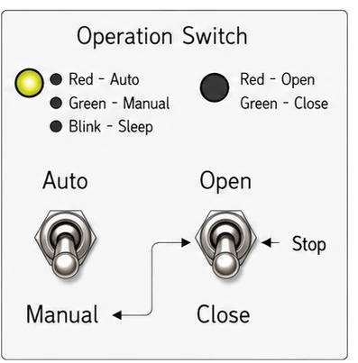
운전 스위치 — Auto(위)로 맞추면 자동운전, Manual(아래)로 맞추면 수동운전
2. 제어방식 — 온도제어 / 시간제어
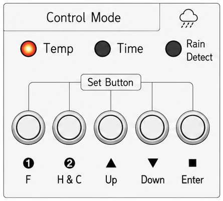
제어방식 표시(Control Mode) — Temp 온도제어 / Time 시간제어 / Rain Detect 빗물감지 · 아래는 설정버튼
본 컨트롤러는 자연환기 창을 개폐하여 그린하우스 내부의 온도를 관리하는 장치로, 재배작물의 특성에 맞게 사용할 수 있도록 목표온도를 설정하여 제어하는 온도제어와 시간을 정해 환기창을 열거나 닫는 시간제어 방식이 채택되어 있습니다. 이 2가지 중에서 한가지를 선택하여 운전할 수 있습니다.
📋 설정기호(F · H · C)란?
제어부 오른쪽에는 설정기호표가 붙어 있습니다. 설정할 수 있는 항목마다 F-1 · H-2 · C-3 같은 기호가 정해져 있고, 그 기호가 무엇을 정하는 항목인지와 설정할 수 있는 범위를 이 표에서 확인합니다.
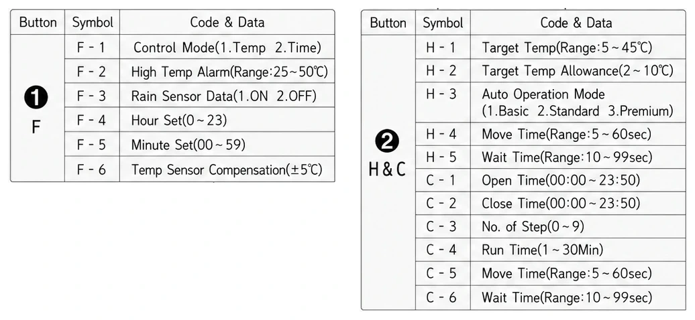
제어부 설정기호표 — 왼쪽 ❶ F 기본 설정 6가지 / 오른쪽 ❷ H&C 제어 설정 11가지
❶ F 버튼으로 부르는 F-1 ~ F-6 — 제어방식·고온경보·빗물감지·현재시각 등 기본 설정입니다.
❷ H&C 버튼으로 부르는 H-1 ~ H-5 / C-1 ~ C-6 — 온도제어(H)와 시간제어(C)의 세부 설정입니다.
기호 옆 괄호 안 숫자가 설정 범위입니다. 예를 들어 H-1 Target Temp(Range : 5~45℃)는 목표온도를 5~45℃ 사이에서만 정할 수 있다는 뜻입니다.
각 항목을 실제로 설정하는 방법은 「Ⅹ. 데이터 설정」에서 다룹니다. 아래 표의 F-1이 그 첫 번째 항목입니다.
설정기호
코드
제어방식
내용
F-1
1
온도제어
제어부에 목표온도를 설정하여 제어되게 하는 방법
2
시간제어
제어부에 열림시간과 닫힘시간을 설정하여 제어되게 하는 방법
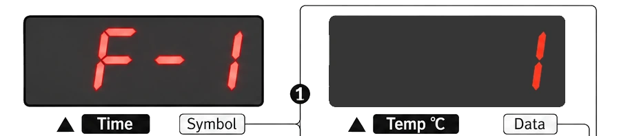
온도제어 선택 — F-1의 코드 1
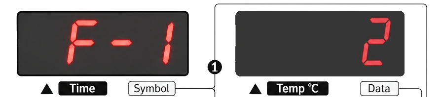
시간제어 선택 — F-1의 코드 2
3. 작동방식 — 기본 / 표준 / 고급
온도에 의한 자동운전은 온도센서가 측정한 온도와 사용자가 설정한 데이터에 의해 작동됩니다. 3가지 작동방식 중에서 현장의 실정에 맞는 한가지 방식을 선택하여 적용할 수 있습니다. (설정기호 H-3)
📐 열림·닫힘 개시온도란?
아래 세 가지 작동방식은 모두 개시온도가 되면 작동을 시작합니다. 개시온도는 설정한 목표온도(H-1)와 온도 폭(H-2)으로 정해집니다.
열림 개시온도 = 목표온도 ＋ 온도 폭의 절반
닫힘 개시온도 = 목표온도 － 온도 폭의 절반
[예] 목표온도 25℃, 온도 폭 4℃로 설정하면 → 실내온도가 27℃가 되면 열림 작동, 23℃가 되면 닫힘 작동이 시작됩니다. 그 사이(23~27℃)에서는 작동하지 않습니다.
1) 기본작동 (H-3 코드 1)
작동개시 온도가 되면 대기 또는 정지하지 않고 연속적으로 작동됩니다.
열림작동 — 열림개시 온도가 되면 연속 열림 작동이 실행됩니다.
닫힘작동 — 닫힘개시 온도가 되면 연속 닫힘 작동이 실행됩니다.
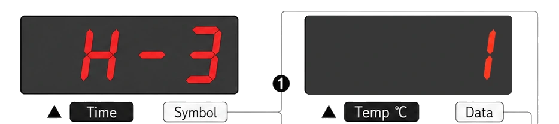
기본작동 선택 — H-3의 코드 1
⚠️
기본작동은 열림 온도가 되면 열림작동이 되고 닫힘 개시온도가 되면 닫힘작동되는 방식입니다. 따라서 그린하우스 내·외부의 온도차가 클 때에는 열림·닫힘 작동이 빈번하게 반복될 수 있습니다. 이럴 경우 작물에 스트레스가 발생할 수 있으며 에너지 손실 및 피복재가 빨리 손상될 수 있습니다. 이럴 때 표준작동 또는 고급작동을 선택하여 운전하면 이러한 현상을 줄일 수 있습니다.
2) 표준작동 (H-3 코드 2)
작동개시 온도가 되면 작동시간(H-4) 동안 작동하고 대기시간(H-5) 동안 정지하는 것을 반복합니다. 환기창을 여러 번 나누어 개폐하는 방식으로, 온도에 의해 작물이 받는 스트레스를 줄이는데 도움이 될 수 있습니다.
열림·닫힘 작동이 잠자기가 실행되기 전까지 반복하여 실행됩니다.
표준작동 선택 — H-3의 코드 2
3) 고급작동 (H-3 코드 3)
온도센서에 의해 측정된 온도에 따라 작동과 대기(정지)의 실행 여부를 스스로 판단하여 환기 창을 개폐하는 고급 작동방식입니다.
열림 개시온도가 되면 작동시간 동안 열림 작동을 하고 대기시간 동안 정지합니다.
대기시간 동안 실내온도를 측정하여 온도가 상승하는 추세이면 작동시간 동안 열림 작동을 실행하고, 온도가 하강하는 추세일 때는 대기를 반복하여 실행합니다.
실내온도가 열림 개시 온도보다 3℃ 이상 높을 때는 대기시간을 무시하고 연속적으로 열림 작동됩니다.
닫힘 작동도 같은 원리로, 온도가 하강 추세이면 작동하고 상승 추세이면 대기하며, 닫힘 개시온도보다 3℃ 이하로 낮을 때는 연속 닫힘 작동이 됩니다.
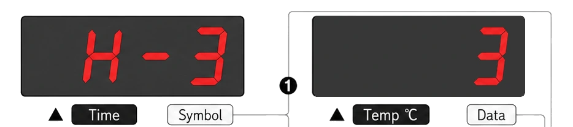
고급작동 선택 — H-3의 코드 3
4. 특별작동 기능
본 컨트롤러는 작물보호와 컨트롤러의 부품보호를 위하여 4가지 특별작동 기능이 있습니다. 잠자기 기능을 제외한 특별작동이 실행될 때에는 고급작동·표준작동·기본작동이 적용되지 않습니다.
우선순위
특별작동 기능
작동
1
서모스타트에 의한 특별작동
열림
2
고온경보에 의한 특별작동
열림
3
빗물 감지에 의한 특별작동
닫힘
4
잠자기 기능
대기
🥇
※ 작동 우선순위를 정한 이유 본 컨트롤러가 사용되는 그린하우스는 농작물을 재배하는 곳으로, 재배작물이 비를 맞아 발생하는 손상보다 고온에 의한 손상이 더 많은 피해가 발생됩니다. 따라서 빗물감지에 의한 특별 닫힘작동에 우선하여, 서모스타트에 설정한 온도와 고온경보로 설정한 온도(비상고온)가 되면 열림 작동되게 하였습니다.
1) 서모스타트에 의한 특별작동 (제1순위 · 열림)
자동운전·수동운전 중에 모두 적용됩니다.
개별라인 스위치를 정지(꺼짐)로 맞춘 해당 출력라인에 연결된 전동개폐기는 작동되지 않습니다.
본 기능이 실행되면 컨트롤러 내부에 장치된 부저(경음기)가 연속적으로 작동(경음 발생)됩니다.
실내온도가 서모스타트 설정온도보다 낮아지면 본 기능이 해제되어 정상 운전됩니다.
비상고온 서모스타트(EHT-4060) — 설정한 온도를 넘으면 모든 기능에 우선하여 열림 작동됩니다. 자세한 설치·설정은 「Ⅶ. 센서 및 주변기기」 참조
2) 고온경보에 의한 특별작동 (제2순위 · 열림)
본 기능은 자동운전을 선택했을 때에만 적용되며 수동운전 중에는 적용되지 않습니다.
실행되면 제어부의 고온경보 표시등이 적색 점멸되며 내부에서 경보 음(삐-삐-)이 1초 간격으로 발생됩니다.
실내온도가 고온경보 설정온도보다 낮아지면 해제되어 정상 운전됩니다.
서모스타트에 의한 작물보호 기능과는 별도의 기능입니다.
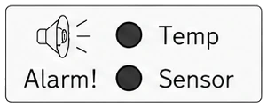
고온경보 실행 시 — 제어부의 고온경보(Temp) 표시등이 1초 간격으로 적색 점멸합니다
3) 빗물 감지에 의한 특별작동 (제3순위 · 닫힘)
본 기능은 자동운전을 선택했을 때에만 적용됩니다.
빗물이 감지되면 제어부의 빗물감지 표시가 1초 간격으로 적색 점멸되며 환기창이 연속적으로 닫힘 작동을 실행합니다.
단, 서모스타트 또는 고온경보에 의한 특별작동이 실행될 때에는 빗물이 감지되어도 닫힘이 아닌 연속 열림 작동이 됩니다.
비가 그쳐서 레인센서의 감지 판에 빗물이 완전히 마르면 해제되어 정상 운전됩니다.
빗물이 감지되면 제어부의 Rain Detect 표시등이 1초 간격으로 적색 점멸합니다
4) 잠자기 기능 (제4순위 · 대기)
컨트롤러의 부품보호 및 절전을 위한 특별작동 기능입니다. 열림 또는 닫힘 작동을 실행한 다음 일정한 시간이 지나도록 작동개시 온도가 되지 않거나 빗물감지가 되지 않을 때는 작동을 중단하고 대기하게 됩니다.
본 기능은 자동운전을 선택하였을 때만 실행되며 수동운전을 선택했을 때는 실행되지 않습니다.
열림 작동을 실행한 누적시간이 30분이 되면 "열림 후 잠자기"가 시작됩니다.
닫힘 작동을 실행한 누적시간이 30분이 되면 "닫힘 후 잠자기"가 시작됩니다.
온도변화·빗물감지 등으로 작동 조건이 되면 자동으로 해제되어 정상 운전이 됩니다.
잠자기 실행 중에 손으로 직접 운전선택 스위치를 조작하면 해제됩니다.
잠자기 상태
운전상태 표시램프
열림 작동 후 잠자기
적색 점멸
닫힘 작동 후 잠자기
녹색 점멸
🧭 직접 확인해 보기
위 네 가지가 동시에 겹칠 때 실제로 무엇이 실행되는지 아래에서 눌러 확인해 보십시오.
🧭 특별작동 우선순위 판정기
현재 상황을 켜고 끄면, 실제로 어떤 작동이 실행되는지 판정해 드립니다.
서모스타트 설정온도 초과
실내온도 > 서모스타트 설정
고온경보(F-2) 온도 초과
실내온도 > 비상고온 설정
레인센서 빗물 감지
F-3 = 적용 상태
작동 조건 없이 30분 경과
잠자기 조건
해당 개별라인 스위치 = 정지
그 라인만 별도 적용
판정 결과
서모스타트에 의한 특별작동 열림
고온경보에 의한 특별작동 열림
빗물 감지에 의한 특별작동 닫힘
잠자기 기능 대기
🎬 작동방식 비교 시뮬레이터
방식을 고르고 온도차를 조절해 보세요. 아래에 실제 개폐 패턴이 그려집니다.
작동(열림)대기(정지)
Ⅸ. 제어부
제어부는 직접기억회로(메모리IC)와 각종 전자부품으로 이루어진 정밀기기입니다. 분해하거나 충격을 가하지 말고 과도한 습기 및 직사광선을 피해주십시오.
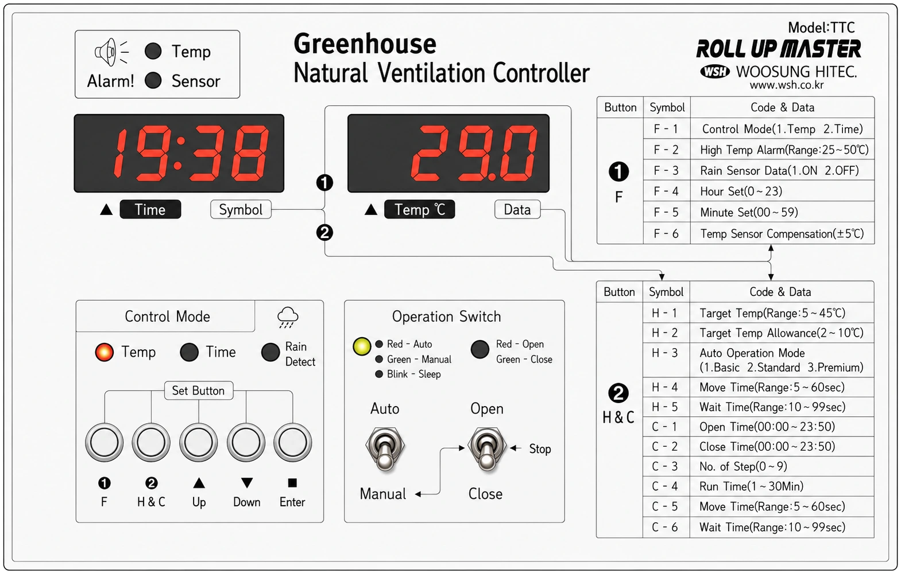
12345678
제어부 — 표시화면·설정버튼·운전 스위치와 설정표(①~⑧)
제어부 각부 명칭
고온경보·센서이상 표시
현재시간 표시
현재온도 표시
F 기본설정 표
H&C 제어설정 표
현재 제어방식·빗물감지
설정버튼 5개
운전선택·수동 스위치
1. 제어부 명칭
제어부에는 현재시간과 현재온도를 표시하는 화면(FND 숫자)과, 작동 스위치 및 작동상태를 나타내는 램프(LED)가 있습니다. 이 화면과 표시등은 정상적으로 작동할 때와 설정할 때 서로 다르게 표시됩니다.
번호
명칭
표시 및 기능
①
고온경보 표시
고온 경보가 되었을 때 적색 점멸
②
센서이상 표시
온도센서가 제대로 연결되지 않았을 때 적색 점멸
③
현재시간 표시화면
정상작동 시 현재 시각 / 설정 시 설정 기호
④
현재온도 표시화면
정상작동 시 현재온도 / 설정 시 설정 코드 또는 데이터
⑤
빗물감지 표시
빗물이 감지되었을 때 적색 점멸
⑥
제어방식 표시
온도제어를 선택했을 때 적색 점등
⑦
제어방식 표시
시간제어를 선택했을 때 적색 점등
⑧
설정버튼 ①번
기본 데이터 설정 (누를 때마다 다음 설정항목 표시)
⑨
설정버튼 ②번
제어 데이터 설정 (누를 때마다 다음 설정항목 표시)
⑩
데이터 변경버튼
▲ 데이터 올림
⑪
데이터 변경버튼
▼ 데이터 내림
⑫
데이터 저장버튼
설정한 내용이 저장됨
⑬
운전선택 스위치
상향 = 자동운전 / 하향 = 수동운전
⑭
운전상태 표시
자동운전 적색점등 / 수동운전 녹색점등 / 잠자기 중 적색 또는 녹색점멸
⑮
수동운전 스위치
상향 = 열림 / 중립 = 정지 / 하향 = 닫힘
⑯
작동상태 표시
열림 적색 점등 / 닫힘 녹색 점등 / 정지 꺼짐
2. 화면표시
제어부의 숫자 화면은 F.N.D(Flexible Numeric Display)라고 하는 전자부품입니다. 고온 다습하거나 장시간 동안 태양광선에 노출되면 수명이 짧아질 수 있습니다.
자동운전과 수동운전 중 하나를 고르는 스위치입니다. 손잡이를 위(Auto)로 올리면 자동운전, 아래(Manual)로 내리면 수동운전이 됩니다.
2) 수동운전 스위치
운전선택 스위치를 아래로 내려 수동운전에 맞추었을 때만 이 스위치로 운전할 수 있습니다. 손잡이를 위(Open)로 올리면 열림, 중립(Stop)에 맞추면 정지, 아래(Close)로 내리면 닫힘 작동됩니다.
운전 스위치 — Auto/Manual(운전선택) / Open·Stop·Close(수동운전)
스위치명칭
손잡이 위치
기능
표시등 색깔
운전선택 스위치
상
자동운전
적색
하
수동운전
녹색
수동운전 스위치
상
수동열림
적색
중
정지
꺼짐
하
수동닫힘
녹색
Ⅹ. 데이터 설정
본 컨트롤러의 자동운전은 사용자가 설정한 각종 데이터를 바탕으로 제어되는 것으로, 사용하기 전에 반드시 정확하게 설정해야 합니다.
설정 기본 흐름
설정버튼 ①번(기본) 또는 ②번(제어)을 눌러 왼쪽 화면에 설정기호를 표시합니다.
오른쪽 화면의 데이터가 점멸될 때 ▲올림 / ▼내림 버튼을 눌러 데이터를 변경합니다.
저장 방법은 2가지입니다. · 설정 후 저장버튼을 누르면 즉시 저장되고 정상 운전화면으로 돌아옵니다. · 설정 후 아무런 버튼을 누르지 않으면 20초 후에 "삑" 소리가 나면서 저장됩니다.
⚡
데이터 설정 도중에 전원이 꺼지면 설정한 데이터가 저장되지 않으므로 다시 설정해야 합니다.
1. 기본설정 (설정버튼 ①번) — F 기호
설정항목
기호
출고시
설정 범위
단위
제어방식
F-1
1
1=온도 또는 2=시간
1 또는 2
비상고온
F-2
42℃
25~50℃
1℃
강우시 제어
F-3
1
1=적용 또는 2=해제
1 또는 2
현재의 시
F-4
－－
24시간제의 시 설정
1시간
현재의 분
F-5
－－
분 설정
1분
온도센서 보정
F-6
0℃
-5℃ ~ 5℃
0.1℃
📖 기본 데이터 항목별 내용
F-1 제어방식 선택
F-1 = 1 · 온도제어F-1 = 2 · 시간제어
코드 1을 선택하면 온도제어, 코드 2를 선택하면 시간제어가 됩니다. 제어방식 선택에 따라 제어 데이터의 설정내용이 다르게 표시됩니다.
F-2 비상고온경보
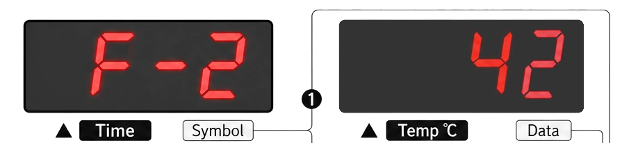
F-2 · 비상고온 42℃
실내온도가 고온경보로 설정한 온도보다 높을 때 경보가 발생되는 특별기능입니다. 경보가 발생되면 특별 열림작동이 되면서 경보음이 발생됩니다.
F-3 레인센서 적용
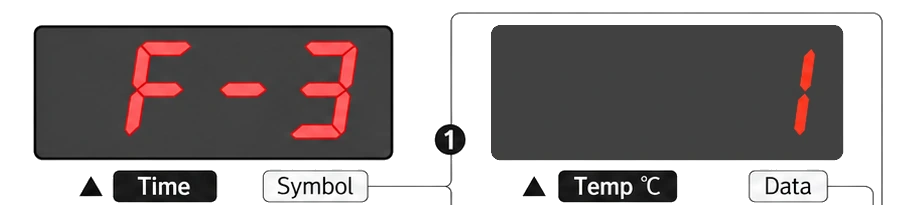
F-3 = 1 · 적용
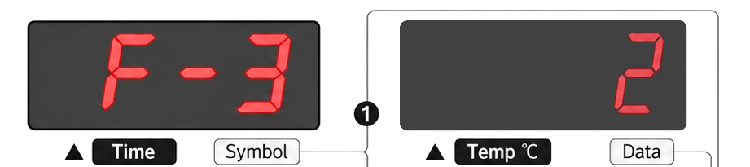
F-3 = 2 · 해제
비가 내릴 때 환기 창을 닫는 특별작동 기능입니다. 서모스타트에 의한 특별 열림기능과 비상고온경보에 의한 특별 열림기능이 발생되었을 때에는 이 레인센서에 의한 닫힘기능은 실행되지 않습니다.
F-4, F-5 시계맞춤
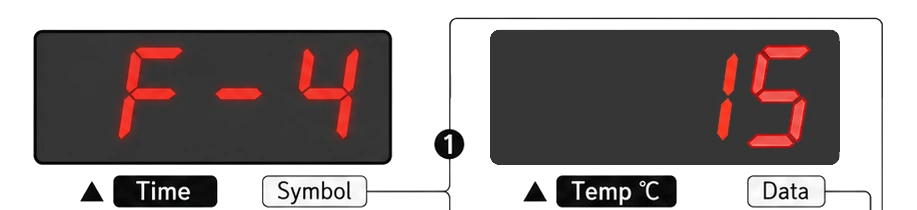
F-4 · 현재 시 15
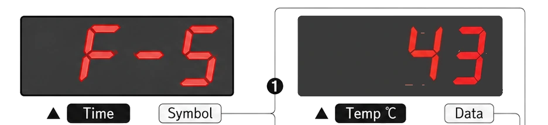
F-5 · 현재 분 43
24시간제 표시방식으로 현재시간을 표시하며 시간을 맞출 때에도 24시간제로 맞추어야 합니다. [예] 현재시간이 오후 3시30분이라면 →15시 30분으로 맞춥니다.
전원이 꺼져도 내부 배터리에 의해 약 일주일 정도 시간이 기억됩니다.
⏰
본 컨트롤러의 시계는 오차에 의해 시간이 틀려질 수 있습니다. 시간을 자주 확인하여 틀릴 때는 정확한 시간을 맞추어 주십시오. 현재시간이 맞지 않으면 희망하는 실제 시간과 다르게 작동됩니다.
F-6 온도보정
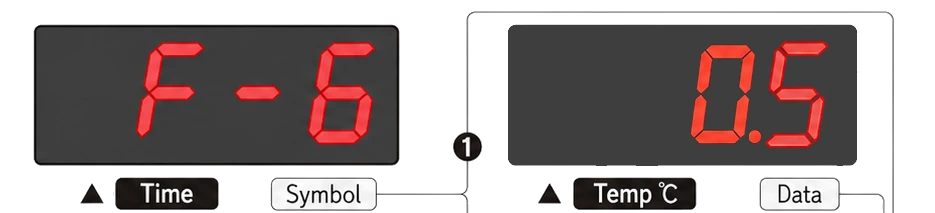
F-6 · 온도보정 0.5℃
표준온도계로 측정한 온도와 본 컨트롤러 화면에 표시되는 온도가 다를 때 온도 편차를 조정할 수 있습니다. 표준온도계보다 낮게 표시될 때는 ＋로, 높을 때는 －로 보정하십시오.
2. 제어 데이터 설정 (설정버튼 ②번)
온도제어를 선택했을 때는 설정기호가 "H-"로, 시간제어를 선택했을 때는 "C-"로 표시됩니다.
■ 온도제어 방식 (H)
설정항목
기호
출고시
설정 범위
단위
목표온도
H-1
26℃
5~45℃
1℃
온도 폭
H-2
2℃
2~10℃
1℃
작동방식
H-3
2
1=기본, 2=표준, 3=고급
1·2·3
작동시간
H-4
10초
5~60초
1초
대기시간
H-5
20초
10~99초
1초
🌡️ 온도 폭 계산기 (H-1 × H-2)
목표온도와 온도 폭을 조절하면 열림·닫힘 개시온도가 자동으로 계산됩니다.
열림 개시온도
27.5℃
목표온도
26℃
닫힘 개시온도
24.5℃
📖 온도제어 데이터 항목별 내용
H-1 목표온도
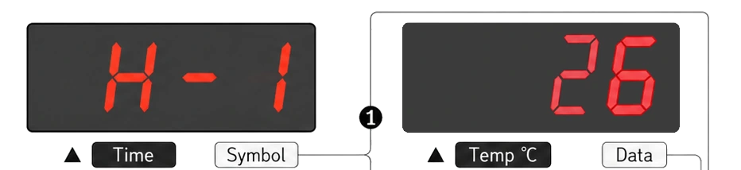
H-1 · 목표온도 26℃
관리하고자 하는 온도를 설정하는 항목입니다. 재배작물의 생육에 가장 적합한 실내의 희망 온도를 의미합니다.
H-2 온도 폭
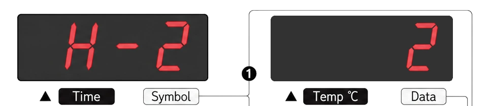
H-2 · 온도 폭 2℃
목표온도의 상·하에 온도 폭을 설정하는 항목입니다. 목표온도와 온도 폭에 의해서 열림작동 개시온도와 닫힘작동 개시온도가 결정됩니다. ① 목표온도에 온도 폭의 ½을 더(＋)하면 열림작동 개시온도 ② 목표온도에서 온도 폭의 ½을 빼(－)면 닫힘작동 개시온도
H-3 작동방식
H-3 = 1 · 기본H-3 = 2 · 표준H-3 = 3 · 고급
기본 — 작동개시 온도가 되었을 때 연속적으로 작동하는 제어방식. 표준 — 작동시간으로 설정한 시간 동안 작동한 다음 대기시간 동안 정지하는 것을 반복적으로 실행. 고급 — 작동 후 대기시간 중에 온도를 측정하여 작동할 것인지 대기(정지)를 지속할 것인지를 스스로 판단하는 작동방식.
※ 기본작동(코드 1)을 선택하면 설정버튼 ②번을 눌러도 H-4·H-5가 나타나지 않고 H-1로 돌아갑니다. 기본작동은 연속으로 작동하므로 작동시간·대기시간을 설정하지 않습니다.
H-4 작동시간 / H-5 대기시간
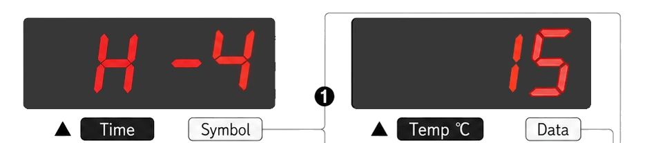
H-4 · 작동시간 15초
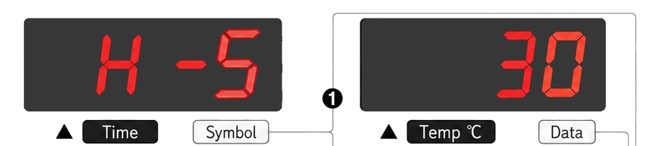
H-5 · 대기시간 30초
작동시간은 "전동개폐기가 작동하는 시간"을 줄여서 표시한 것입니다. 대기시간 동안 측정된 온도에 의해 다음 작동실행 형태가 결정됩니다. ※ 두 기능 모두 특별작동기능이 실행되거나 수동운전 중에는 적용되지 않습니다.
■ 시간제어 방식 (C)
설정항목
기호
출고시
설정 범위
단위
열림시각
C-1
－－:－－
00:00 ~ 23:50
10분
닫힘시각
C-2
－－:－－
00:00 ~ 23:50
10분
분할작동횟수
C-3
0
0~9회
1단위
총작동시간
C-4
30
1~30분
1분
작동시간
C-5
10초
5~60초
1초
대기시간
C-6
20초
10~99초
1초
📖 시간제어 데이터 항목별 내용
C-1 열림시각 — 열림작동이 시작되는 시각을 설정하는 항목입니다.
C-2 닫힘시각 — 닫힘작동이 시작되는 시각을 설정하는 항목입니다.
C-3 분할작동 — 작동시간과 대기시간을 몇 회 실행할 것인지를 설정합니다. "0"으로 설정하거나 서모스타트에 의해 특별 열림기능이 발생되었을 때에는 본 기능이 실행되지 않습니다.
C-4 총작동시간 — 작동시각이 되었을 때부터 총 작동할 시간을 설정합니다. 이 시간이 경과되면 작동을 멈추고 잠자기 상태가 됩니다. ※ 준절기에 이 기능을 이용하여 환기창을 조금만 열리게 할 수 있습니다.
C-5 작동시간 — 작동시각이 되었을 때 전동개폐기가 작동할 시간입니다. 끝나면 대기시간 동안 대기합니다.
C-6 대기시간 — 작동한 다음 대기할 시간입니다. 끝나면 다시 작동시간 동안 작동됩니다.